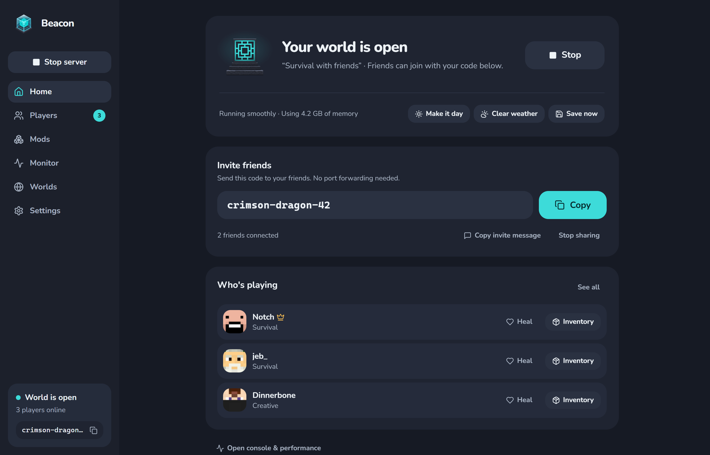
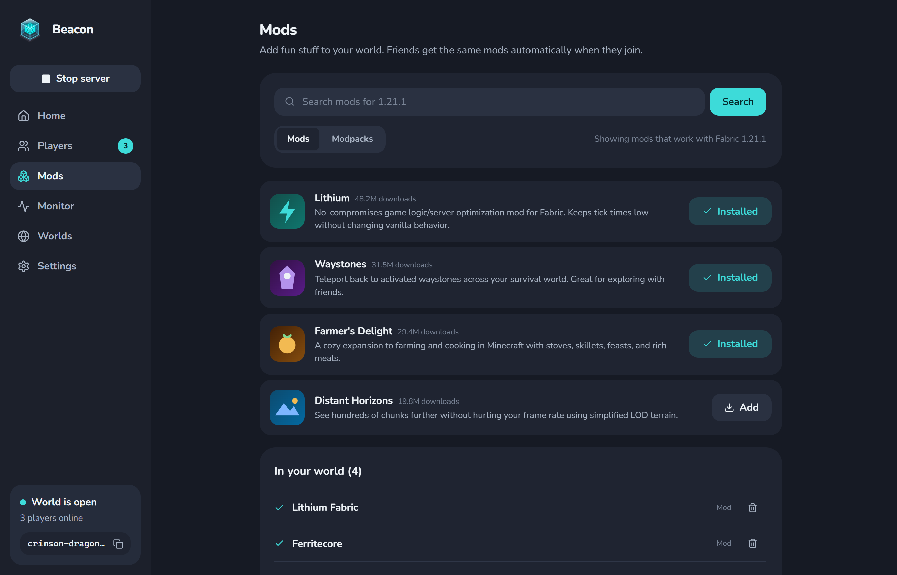
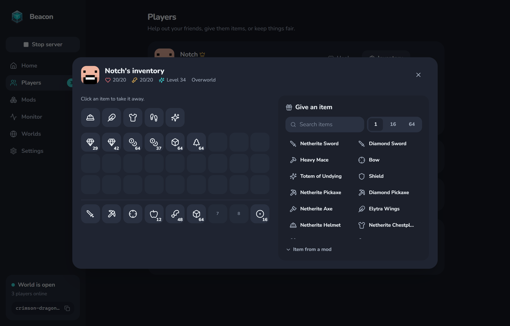
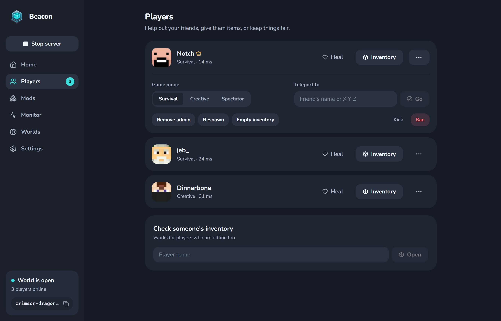
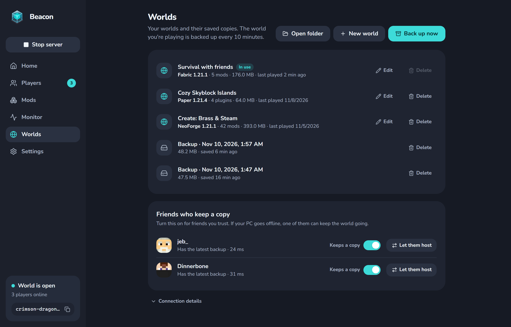
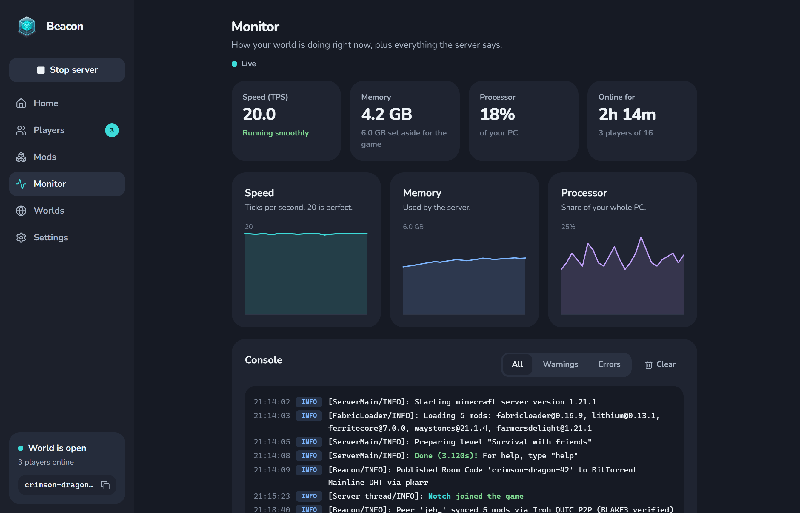

Home & Room Codes
DashboardOne-click start/stop, weather & time controls, P2P room code sharing, and online players.
No port forwarding, no third-party VPNs, and no monthly hosting bills. Beacon turns your PC into an optimized Paper, Fabric, or NeoForge server and connects friends straight through CGNAT and firewalls with a 3-word room code.
Every screen in Beacon replaces complex config files and terminal commands with calm, instant visual controls. Click any tab below—or click a screenshot to zoom in.

One-click start/stop, weather & time controls, P2P room code sharing, and online players.

Search and add mods, plugins, or .mrpack modpacks. Friends download matching mods automatically.

View player health, food, XP, armor, and 36 inventory slots. Remove or gift items in one click.

Switch game modes, teleport players, heal & feed, toggle admin (OP), or kick and ban.

Manage Paper, Fabric, and NeoForge worlds, 10-minute backups, and 1-click host handover to friends.

Track ticks per second (TPS), RAM usage, CPU share, and color-formatted server logs with filters.
The same lightweight executable acts as the server host and the friend client. Neither side ever touches router settings or IP addresses.
From zero to an optimized server in one click
Choose Paper, Fabric, or NeoForge. Beacon silently downloads Portable Java 21 from Adoptium and tunes memory with Generational ZGC or Aikar's G1GC flags.
Click Get my code (or pick your own like cozy-cabin-7).
Beacon publishes your encrypted QUIC node address to the BitTorrent Mainline DHT via
pkarr.
Every 10 minutes, Beacon saves a compressed .tar.zst snapshot and syncs
it to trusted co-hosts so the world can keep running even if you go offline.
Shows up right inside Minecraft's LAN Worlds
Paste crimson-dragon-42 into Beacon's Join a friend
card and press Join. Beacon punches through NAT & firewalls over QUIC.
Playing modded? Beacon compares the server's mod manifest and downloads missing mods from Modrinth CDN or directly from the host over P2P with BLAKE3 verification.
Beacon broadcasts a local UDP multicast signal (224.0.2.60:4445). Open
Minecraft → Multiplayer and join the world at the bottom under
LAN Worlds!
Engineered in Rust and React 19 to eliminate every headache of hosting Minecraft at home.
Derives deterministic Ed25519 keys from a 3-word code and resolves peers via the BitTorrent Mainline DHT. Punches through CGNAT and strict firewalls using Iroh QUIC streams—no central server required.
Automatically provisions Portable Java 21 from the Adoptium API. Detects your free RAM
and injects Generational ZGC (-XX:+UseZGC -XX:+ZGenerational) for 6 GB+ or
Aikar's G1GC flags.
Install Modrinth mods, Paper plugins, and .mrpack modpacks with 12-stream
parallel downloads. Fabric servers auto-install Lithium & FerriteCore, and friends
sync your exact mods before joining.
Packages your world, mods, and properties into Zstd snapshots (.tar.zst)
every 10 minutes and replicates them to trusted friends. Hand over hosting in one click
or recover automatically in 15 seconds if the host crashes.
Watches world/playerdata/<uuid>.dat in real time, decompresses GZip
NBT, and renders an interactive 36-slot + armor + off-hand grid. Delete items with one
click or spawn items from a searchable catalog.
Instant toggles for Keep Inventory, Cracked/Offline Mode, PvP, Difficulty, and Whitelist. Includes a two-line Minecraft MOTD color editor, 64×64 server icon cropper, and minimize-to-tray background hosting.
See how Beacon compares to traditional ways of hosting a Minecraft server for friends.
| Capability | Beacon | Paid Hosting | Router Port Forwarding | VPNs (Hamachi / Radmin) |
|---|---|---|---|---|
| Monthly Cost | $0 Forever | $10 – $35 / month | $0 | Free tier limits (e.g. 5 peers) |
| Works Behind CGNAT & Strict Firewalls | Yes (QUIC Hole Punching) | Yes | No (Blocked by ISP CGNAT) | Requires virtual network driver |
| Automatic Mod Sync for Joining Friends | Built-in (Modrinth + P2P) | Manual zip / launcher setup | Manual zip / launcher setup | Manual zip / launcher setup |
| Appears Automatically in LAN Worlds | Yes (Zero IP typing) | No | No (Exposes public IP) | Often blocked by Windows Firewall |
| Co-Host Backup & Crash Failover | Automatic .tar.zst Replicas | Manual FTP / panel backups | Server dies if host PC sleeps | Server dies if host PC sleeps |
| Visual Live Inventory & Player Inspector | Built-in Real-Time NBT Grid | Console commands only | Console commands only | Console commands only |
Built with Tauri v2 (Rust) and React 19. No Electron bloat, no Docker virtualization overhead, and zero central servers to maintain.
tokio::io::copy_bidirectional
to 127.0.0.1:25565) alongside JSON-RPC control, mod manifests, and
migration heartbeats over a single Iroh QUIC connection.
iroh::NodeAddr to the global Mainline DHT—100% serverless discovery.
[MOTD]§a[P2P] Friend's Server[/MOTD][AD]<port>[/AD] every 1.5s so
Minecraft lists the world natively under LAN Worlds.
tokio::process::Command (~25 MB app RAM)
and hooks RunEvent::ExitRequested to flush worlds (save-all flush
→ stop) so orphan java.exe processes are never left behind.
Beacon is open source on GitHub. Clone the repository to inspect the Rust backend, run the test suite, or build your own installer.
Download the Windows installer for Beacon, pick a world, and press Start. Share your room code with friends and play together in minutes.